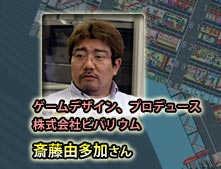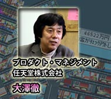
| |
|
|
不朽の名作と呼ぶにふさわしい『The Tower』の世界。ビルを経営し、そこに暮らす人々の生活を垣間見るという発想は一体どこから得たのか？ また、ゲームボーイアドバンスに移植するにあたっての変更点や、あえて残した部分など、こだわり抜いて生まれた『The
Tower SP』。今回は生みの親・斎藤氏にお話を伺うべく株式会社ビバリウムを訪ねました。 |
|
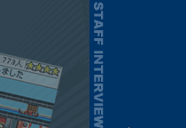
|
| N.O.M：もともとはPC版でできたゲームですよね。『The Tower』の歴史を教えて下さい。 |
| 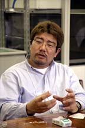斎藤：最初にこれを作ったのはもう10年ほど前のことで、当時は家庭用ゲームと言えばアクションが主流の時代でした。僕は『シムシティー』がすごく好きで影響を受けているんですが、大人のためのゲームだなという所にとてもハマって。当時は別の会社に所属して、マルチメディアのあり方みたいなことを模索していたんですよ。で、それをコンピューターゲームにどう載せるかということを考えていました。その後独立して会社を作って、『The
Tower』を制作したんですが、とにかく”大人向け”というのを意識して作りました。僕はとにかくMacが大好きなので、まずMac版で作り、DOS版を作り、Windows3.1へと移植していきました。その後コンシューマーへも移植したんですが、ベースはあくまでPCだと思ってやっていましたね。 |
| N.O.M：ビルを経営するシミュレーションゲームは、なかなか思いつきませんよね。 |
| 斎藤：閉鎖系のゲームで２つの候補を考えていてですね。ひとつは『東京ディズニーランド
コンストラクションキット』。メリーゴーラウンドとか、コーヒーカップなんかがあって、お客を待たせない遊園地作りとか、待ち時間をどうさせるかというゲームですね。でもこれはイギリスの会社が手を出しているという噂を聞いて、やめました。 |
| N.O.M：それで、もう片方がこれなんですね。テーマはどういうことなんでしょう。 |
| 斎藤：テーマと言えば、僕はゲーム業界自体が、限られたテーマを掘り尽くしているような気がするんですよ。実はまだ扱ってないテーマが沢山あるはずだと思います。例えば学校作りなんて楽しいと思いますね。学校にも産業と密着した役割があって、地域があって…こういうのをやったら楽しいと思いません？ |
| 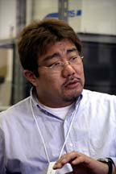斎藤：で、これはもともと住んでいたマンションのエレベーターが発想の元になっているんです。仕事で残業してヘロヘロになって帰ってきて、７階と13階にひとつずつエレベーターがある。上がりボタンを押したら、13階にある方が動いて降りてきたんですよ。なんだこれ？ と。普通は７階にある方が１階に近いんだから、遠い方が来たらビックリするじゃないですか。朝に備えて、”降りるモード”に設定されていたのかもしれないですが…。で、これを会社で話していて、これをヒントにゲーム作れないかなあと。でも予算が下りなかったので、自分で独立して作ることにしたわけです。 |
| 斎藤：それが考えてもよくわからなくて、製造している会社に問い合わせたんですよね。だけど「企業秘密」と言って教えてくれなかったんですよ。あちこち聞きまくって、やっとある会社の人が「そんな難しいことじゃなく、円運動ですよ」と一言漏らしたのがきっかけでわかりました。「なんだぁ」って。 |
| N.O.M：エレベーターの昇降が元って、どういったヒントでゲームが生まれるかわかりませんねえ。 |
| 斎藤：ほんの他愛もないことで発想って生まれますよ。もっと題材にしていいものが世の中には沢山あるんじゃないかな。 |

| N.O.M： |
パソコンゲームがベースとなっている『The Tower』をゲームボーイアドバンスに移植された理由は？ |
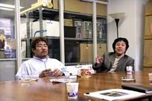斎藤：チマチマ手元でやるゲームというのを、携帯型ゲーム機でやりたかったんですよね。PCだとチョコチョコやってというのが出来ないですから。コントロールパッドを握ってやるものだと、時間的にも要求が大きくなりますし、持ち歩いて時々見るようなものにしたかったんですね。
大澤：僕がやっていて面白いと思うのは、携帯型だと画面サイズが小さく、スクロールさせないと見えない所でなにが起きているのか気になってドキドキするということ。だからあえて「放っておく」という、普通のプレイとはまた違った面白さがあると思います。
斎藤：GBAならではの楽しみ方というのがあって、やはり持ち歩けるという部分が大きいと思います。「自分のもの」のように錯覚できるという所有感。これは携帯電話やデジカメなんかもそうですよね。家に帰って見るのではなく、この場で見せることができる。
大澤：題材自体は身近だけど、見た目はやっぱり地味じゃないですか。決まったキャラクターがいるわけじゃないし。でもユーザーさんからしたら、興味はあるだろうなと思うわけですよ。GBAへ移植したこのゲームを任天堂に持ち込まれた時というのは、（ゲームボーイアドバンス）SPが出た頃だったんですね。で、ハード自体が、これまでよりも、より広いユーザー層を意識したデザインでした。当然、大人も楽しめるソフトを出したかったので、そこにマッチしたというわけです。 |
| N.O.M：当時は「大人が電車で遊んでもカッコイイ」ということで話題になりました。 |
| 大澤：そうですね。いまのビジネスマンからしたら、このソフトはパソコンが家庭に入った頃にデスクトップ上で動いていたゲームで、なじみ深いというのがありますね。当時の中高生がいまはビジネスマンとして働くようになって、彼らならゲームボーイアドバンスSPで遊ぶのでは？ と。その第一弾として送り出すものということで。 |
| N.O.M：『The Tower』自体がとてもヒットしたゲームですよね。 |
| 斎藤：これは「誰でも知っている題材だから」です。期待しているものを期待通りに見せる。誰でも知っている、わかりきっているものが予想通りに動くというのがヒットの理由でしょう。ある著名な作家さんが「自分の知らないものでたったひとつだけヒットしたものがある。それはマリオだ」と言っていましたけど(笑)。大概は自分の知っている題材を扱っているものがヒットするんですよね。 |
| 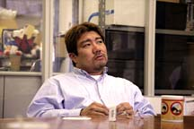斎藤：経営シミュレーションは一時ブームになって沢山出ましたが、ゲーム性が低いものばかりで。バランスシート的な経営が多く、実際の現場的なものが入ってなくて、人を惹き付ける力がなかったんですよ。このソフトを作った時、「このゲームはわかりにくい。プレイヤーがオーナー、CEO、経営部長、建設業者、そのどれなのかわからない」と言われて正直怯みました。それで考えたんですが、現実のビル経営になると役割は分かれてなくていいんですよ。ひとつのビル経営ということを分担してやっているだけで。手がないから分担してるけど、バーチャルだったらいっぺんにできていいじゃないかと。 |
| N.O.M：すると『The Tower』はより現実に近いゲームということですか。 |
| 斎藤：そうです。経営の現場を楽しめるゲームです。というか、これは別に経営ゲームではなくて「ビルの住人を怒らせないようにする現場のゲーム」です(笑)。 |
| 斎藤：『論語』では、「経営」とは「人を育てる」というような意味があるんですよ。自分はレゴブロックが大好きな子供だったんですが、動くレゴというつもりで作っていました。そして主役は常に人である、と。ビルではなく、そこに住む住人ですね。 |
| N.O.M：実は私、途中までプレイしたら見た目に我慢ができなくなり、建て替えてしまったんです。 |
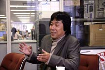大澤：それはもう、こちらの思うつぼですね(笑)。
斎藤：昔から考えたら、自分の作ったものを持ち歩いて見比べるとかってあり得ない風景でしたよね。他人のを見て「あ、こんな所はこうすればいいのか！」って思ったりする。それってすごいですよ。「閉鎖した生態系を作る」というのがビバリウムという社名の由来なんですが、箱庭を作るとそこに生命感ができていくんです。”建物のなかに生き物が棲み始める”というのが嬉しいんですよ。宮本さん（任天堂・情報開発本部長）が「建ててすぐに人が入るのが嬉しいね」とおっしゃってました。 |
斎藤：シルエットっていうのがまたいいんです。部屋のなかでそれぞれドラマがあるわけで、それを想像して欲しいなと。ホテルで男女がチェックインして、この人たちなにしてるのかなーとか(笑)。
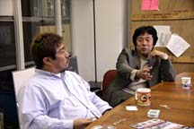
大澤：そば屋は男ばっかりかとか、１人しかいないと寂しいだろうなぁとか。あのドットに思い入れが入るんですよ。そこに名前をつけたりすると、もっと面白いですよ。生命感も感じられるので、名前には注目です。
斎藤：人の想像力に勝てるものってありませんから。PC版の時にBBSへの書き込みがあったんですが、「夜中になるとそば屋の出前幽霊が出る」っていうのがあって。実はバグだったんですけど、「おかもち持った霊が歩き回ってる」なんて、都市伝説みたいで面白いじゃないですか。「仕様か？ バグか？」って想像して、別の視点からも楽しんで欲しいですよね。 |
| N.O.M：そば屋で思い出しましたが、飲食店では『Aボタン連打で客寄せ』というのがありますね。 |
| 斎藤：これは今回新たに追加した要素です。基本的に『待ち』のゲームなんですが、一部ゲームと向き合うための要素として入れたんですよね。 |
| N.O.M：「店員さんは手を叩いて呼び込みをやってるに違いない」と思いながら連打してました(笑)。 |
斎藤：連打に関してはトイレ掃除みたいな、基本的にイヤなこととリンクさせたんですよね。労働するということで(笑)。
大澤：慣れていない人は資金を最初の頃に使ってしまうんですよ。で、やることがなくなる。だからトイレ掃除でもするかと(笑)。従業員になったりオーナーになったりして、気分を変えた遊び方ができますよね。 |

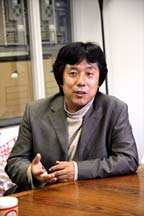斎藤：自分も普段エレベーター待ちとかしいてイライラすると、「あ、いまオレ赤くなってんのかな。これ誰かに見られてるのかな…」とか思ったりします。（編集部注：ゲーム中でストレスのたまったキャラクターは赤く表示されます）
大澤：やった後、「オレはこういう理論でこう作った」と言いたくなるはずです。大人は大人の理論で、子供は子供の視点でデザインすると思うんですよ。意外に子供が作ったビルの方が収益が高かったりして(笑)。ほったらかしても動く、そしてその「行間を読む」というようなことをして欲しいです。
斎藤：やはり押しつけられた世界ではなく、自分のやりたいようにということですね。やらされている感でなく、想像力が介入できる遊びをして欲しいと思っています。 |
| N.O.M：現代人はやることが多すぎて忙しいですからね。 |
 大澤：これは地味であるがゆえに、脳内で補完できるわけですよ。行間を説明するソフトが多いなか、これは説明がない。大人も子供もやりたいソフトだと思います。ゲームは全てを語らない方がいいと思いますね。ゆるいゴールはあるけど、正解というものは存在しない。 大澤：これは地味であるがゆえに、脳内で補完できるわけですよ。行間を説明するソフトが多いなか、これは説明がない。大人も子供もやりたいソフトだと思います。ゲームは全てを語らない方がいいと思いますね。ゆるいゴールはあるけど、正解というものは存在しない。
斎藤：シミュレーションですから、なにを見せてもネタバレになりませんしね。「人生で必要なことは砂場で学んだ」という言葉がありますが、これを人生の実験場としてルールも自分で作ればいいと思います。 |
| N.O.M：ゲームオーバー…破産とかってあるんですか？ |
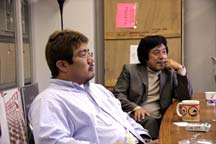斎藤：いえいえ。本当は破産とか色々考えたんですが、借金すると別のゲームになっちゃいますからね。本当は銀行を作った時に入れようかなと考えたんですけど。
大澤：これを社内のデバッグスタッフに見てもらった時、「今風ではない」と言われたんですよ。そんなことはわかっている。任天堂が抱えているファン層に見合わないんじゃないかとも。でも、だからこそですよ。違うファン層に届けたくて。「こういうソフトがあるよ」というのが届けば、絶対にわかってもらえると思いますね。
斎藤：やはり、『The Tower』には10年の歴史があるわけで。
大澤：あと、説明書をぜひ読んで下さい。ゲーム内では語られないバックボーンとして、中身を見てもらいたいです。作家性を打ち出していくゲームということで、説明書にもそれが現れていますから。今後は個人の作家性、個性というようなものを打ち出したゲームが増えていくんじゃないかと思っています。 |
| N.O.M：では最後に、ユーザーの皆さんへメッセージをお願いします。 |
大澤：繰り返しになりますが、ビルのなかで生活する人々の動きを想像して、ドラマを楽しんで下さいね。
斎藤：日頃見慣れているものが、裏でどういう動きをしているのかということを、ご自身で体験して楽しんで下さい。 |
|